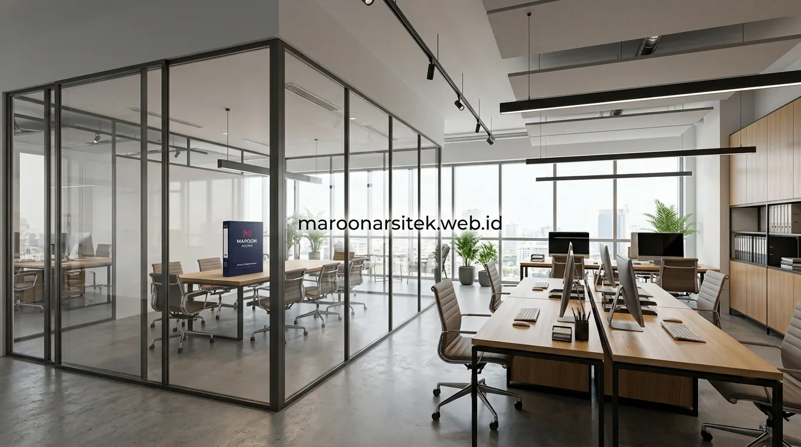

Banyak bangunan komersial yang didirikan tanpa perencanaan tata ruang matang akhirnya menghadapi kendala operasional setelah beroperasi, seperti alur kerja yang tidak efisien atau ruang yang tidak proporsional dengan kebutuhan bisnis. Bersama layanan jasa desain bangunan komersial dari Maroon Arsitek, setiap meter persegi lahan Anda dirancang secara presisi untuk mendorong efisiensi dan nilai komersial bisnis.
Perencanaan Alur Kerja sebagai Dasar Tata Ruang Komersial
Perencanaan alur kerja menjadi dasar utama dalam mendesain tata ruang bangunan komersial, karena posisi setiap area perlu disesuaikan dengan urutan aktivitas operasional agar tidak menimbulkan pergerakan yang tidak efisien di dalam bangunan. Pendekatan ini berlaku baik untuk ruko dengan aktivitas retail maupun kantor dengan aktivitas administratif.
Pemetaan alur kerja dilakukan sejak sesi konsultasi awal dengan klien, untuk memahami proses operasional bisnis yang akan berjalan, termasuk titik-titik interaksi antara staf, pelanggan, maupun barang yang perlu difasilitasi melalui tata ruang yang dirancang.
- Zonasi Publik: Lobi penerima tamu, area display produk, dan counter kasir ditempatkan di bagian depan yang mudah diakses.
- Zonasi Operasional: Ruang kerja staf, meeting room, dan pantry ditata dengan alur sirkulasi yang tidak terpotong aktivitas umum.
- Zonasi Servis & Logistik: Akses loading barang dan ruang utilitas MEP diletakkan di sisi belakang agar tidak mengganggu citra profesional pada jasa kontraktor bangunan.
Penempatan Area Publik dan Area Kerja secara Terpisah
Kebutuhan pemisahan area publik dan area kerja internal dijawab melalui perencanaan zonasi yang jelas, sehingga pelanggan atau tamu tidak perlu melintasi area operasional internal yang seharusnya bersifat privat bagi staf.
Pemisahan ini turut menjaga profesionalisme operasional bisnis, sekaligus memberikan kenyamanan bagi staf yang bekerja tanpa gangguan lalu lintas pelanggan yang berlebihan di area kerja mereka.
Efisiensi Ruang untuk Memaksimalkan Fungsi Lahan Terbatas
Efisiensi ruang menjadi pertimbangan penting terutama pada lahan komersial dengan luas terbatas, di mana setiap sudut bangunan perlu dimanfaatkan secara optimal tanpa mengorbankan kenyamanan dan fungsi operasional bisnis yang akan berjalan. Pendekatan ini membantu memaksimalkan nilai investasi lahan yang dimiliki.
Desain multilevel atau mezanin dapat menjadi solusi untuk menambah kapasitas ruang tanpa memperluas lahan dasar bangunan, terutama untuk jenis usaha yang membutuhkan area penyimpanan atau ruang tambahan di luar area operasional utama.

Pemanfaatan Ruang Vertikal pada Lahan Terbatas
Kebutuhan tambahan kapasitas pada lahan terbatas dijawab melalui pemanfaatan ruang vertikal, seperti penambahan level mezanin untuk area penyimpanan atau ruang kerja tambahan, tanpa memerlukan perluasan lahan dasar bangunan pada proyek desain interior kantor komersial.
Pemanfaatan ruang vertikal ini perlu memperhitungkan struktur bangunan secara cermat, agar penambahan level tidak mengorbankan kekuatan dan keamanan bangunan secara keseluruhan.
Integrasi Fungsi Estetika dan Fungsi Operasional Bangunan
Desain bangunan komersial perlu mengintegrasikan nilai estetika dengan fungsi operasional secara seimbang, karena tampilan visual yang menarik saja tidak cukup jika tidak didukung tata ruang yang benar-benar mendukung aktivitas bisnis sehari-hari. Keseimbangan ini menjadi kunci keberhasilan desain bangunan komersial jangka panjang.
Pemilihan material dan elemen desain interior disesuaikan dengan citra bisnis yang ingin ditampilkan, namun tetap mempertimbangkan daya tahan dan kemudahan perawatan mengingat bangunan komersial umumnya digunakan dengan intensitas tinggi setiap hari.
Pencahayaan dan sirkulasi udara turut dirancang untuk mendukung kenyamanan jangka panjang, baik bagi staf yang bekerja di dalamnya maupun pelanggan yang berkunjung, sehingga bangunan tidak hanya terlihat baik namun juga nyaman digunakan secara berkelanjutan.
Pemilihan Material dengan Pertimbangan Perawatan Jangka Panjang
Kebutuhan bangunan komersial yang mudah dirawat dijawab melalui pemilihan material yang tahan terhadap intensitas penggunaan tinggi, sehingga biaya perawatan jangka panjang dapat ditekan tanpa mengorbankan tampilan estetika bangunan bersama tim jasa arsitek profesional kami.
Pertimbangan ini penting terutama untuk area dengan lalu lintas tinggi, seperti lantai dan dinding pada jalur utama, yang memerlukan material dengan daya tahan lebih baik dibanding area dengan intensitas penggunaan lebih rendah.